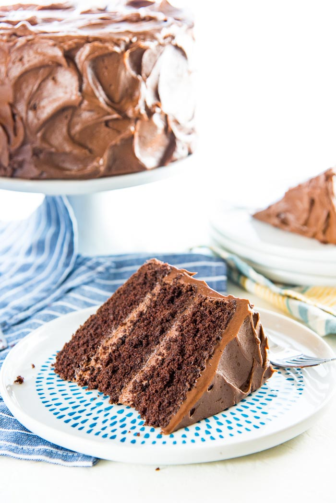

Are you craving that moist and fluffy delicious chocolate cake? Well you are in luck because you have found the right place.
Now I like to use a hersheys chocolate, but I decided to experiment a little bit and I found to get a creamier chocolate is use
cream cheese and Cadburys dairy milk chocolate. But if you want that classic cake I recommend going with the Hersheys.
Without further a do lets jump into the ingredients!
So that is your list of ingredients to make the best classic chocolate cake, now we will get into the steps of how to make it.
Prep. Preheat the oven to 350º F. Prepare two 9-inch cake pans by spraying with baking spray or buttering and lightly flouring.
Whisk dry ingredients Add flour, sugar, cocoa, baking powder, baking soda, salt and espresso powder to a large bowl or the bowl of a stand mixer. Whisk through to combine or, using your paddle attachment, stir through flour mixture until combined well.
Mix in wet ingredients Add milk, vegetable oil, eggs, and vanilla to flour mixture and mix together on medium speed until well combined. Reduce speed and carefully add boiling water to the cake batter until well combined.
Bake. Distribute cake batter evenly between the two prepared cake pans. Bake for 30-35 minutes, until a toothpick or cake tester inserted in the center of the chocolate cake comes out clean.
Frost. Remove from the oven and allow to cool for about 10 minutes, remove from the pan and cool completely. Frost with Chocolate Buttercream Frosting.